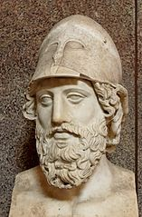
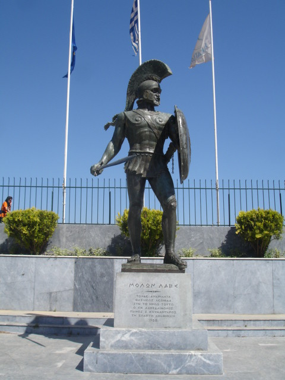

Role & Contribution of Leaders
Themistocles, Leonidas, Eurybiades, and Pausanias in the second Persian invasion
Introduction
Although there were many significant individuals who contributed to the success of the Greeks during the second Persian invasion, there are a few that stand out in the ancient sources.
Themistocles

What did he do?
Implemented naval policy in Athens — fortification of the harbour at Piraeus, convinced citizens to use silver from Laurium to build fleet of triremes
"The Athenians had amassed a large sum of money from the... mines at Laurium, which they proposed to share out amongst themselves... Themistocles, however, persuaded them to give up this idea and, instead of distributing the money, to spend it on the construction of two hundred warships..."
— Herodotus
Was an instrumental figure during the Congress of the Isthmus
"The Athenians [under the leadership of Themistocles] waived their claim [to lead the naval forces] in the interest of national survival, knowing that a quarrel about the command would certainly mean the destruction of Greece."
— Herodotus
Planned the evacuation of Athens in the event of an invasion of the city-state
"The Athenians in their entirety and the aliens who live in Athens shall place their children and their women in Troezen, the founder of the land. The elderly and movable property shall for safety be deposited at Salamis."
— The Troezen Decree
Played a role at Artemisium which lessened Greek losses; took an unofficial leadership role in the Battle of Salamis which ensured Greek victory
"[Themistocles speaking to Eurybiades]: 'It is now in your power', he said, 'to save Greece, if you take my advice and engage the enemy's fleet here in Salamis...'"
— Herodotus
Led policy changes which allowed for higher pay for rowers in the Athenian fleet
"...Themistocles... discovered an abundance of money hidden away in the baggage, which had only to be confiscated, and the crews of the ships were well provided with rations and wages."
— Plutarch
Leonidas

What did he do?
Led small force of 300 Spartan hoplites to the Vale of Tempe ahead of other Greek forces
"Leonidas and his three hundred were sent by Sparta in advance of the main army..."
— Herodotus
Used military tactics to hold the pass at Thermopylae for several days
"On the Spartan side it was a memorable fight; they were men who understood war pitted against an inexperienced enemy, and amongst the feints they employed was to turn their backs on a body and pretend to be retreating in confusion..."
— Herodotus
Sent many of the soldiers away when he found out that they had been betrayed
"It is said that Leonidas himself dismissed them, to spare their lives, but thought it unbecoming for the Spartans under his command to desert the post..."
— Herodotus
Showed bravery in the face of overwhelming odds; died as a hero of the Battle of Thermopylae
"...honour forbade that he [Leonidas] should go. And indeed by remaining at his post he left a great name behind him..."
— Herodotus
Eurybiades
What did he do?
Charged with leading the united Greek naval forces in the second Persian invasion of Greece; was the naval commander for both the Battles of Artemisium and Salamis
"The general officer in command, Eurybiades... was provided by Sparta; for the other members of the confederacy had stipulated for a [Spartan] commander, declaring that rather than serve under an Athenian they would break up the intended expedition altogether."
— Herodotus
Persuaded by Themistocles at Salamis to stay and fight
"[Themistocles speaking to Eurybiades]: 'It is now in your power', he said, 'to save Greece, if you take my advice and engage the enemy's fleet here in Salamis...'"
— Herodotus
Argued against Themistocles' proposal to go immediately to the Hellespont (after Salamis) to destroy the bridges
"...Themistocles proposed that they should carry on through the islands direct for the Hellespont, and break the bridges. Eurybiades, however, objected on the ground that to destroy the bridges would be to do Greece the worst possible service."
— Herodotus
Pausanias
What did he do?
Led a force of 24 city-states (over 100,000 troops) against Persia in the Battle of Plataea
"...the aggregate strength of the Greek army [under the command of Pausanias was] 110,000..."
— Herodotus
Maintained unity amongst Greeks in difficult conditions
"The Argives, who had previously agreed with Mardonius to prevent Spartan troops from taking the field, no sooner learned that Pausanias' army had left Sparta than they dispatched the best runner they could find with a message to Attica."
— Herodotus
Devised military tactics to ensure the victory of the Greeks and put an end to the Persian invasion on the Greek mainland
"...Pausanias, son of Cleombrotus and grandson of Anaxandrides, won the most splendid victory which history records."
— Herodotus
What Happened to Themistocles and Pausanias?
Both Themistocles and Pausanias made significant contributions to the outcome of the second Persian invasion of Greece. However, despite their achievements, both men ended their brilliant careers in disgrace. Themistocles was hounded into exile by the Athenians in 472 BC and Pausanias was starved to death by the Spartans about the same time.
Themistocles — Detailed Account
Themistocles is described by Thucydides as "a man who showed unmistakable natural genius." Themistocles:
- Put his vision of Athens becoming a naval power into effect; for example, the fortification of the Piraeus as the port of Athens and the building of a fleet of ships
- Found the solution to a problem and acted upon it quickly; Plutarch says that Themistocles "is generally regarded as the man most directly responsible for saving Greece" because of his strategies at Artemisium and particularly at Salamis; supervised the massive evacuation of Athens and was prepared for it
- Worked hard at preventing disunity amongst the Greeks as he saw that only through a common effort could they hope to survive the threat from Persia
- Resorted to any means when he believed the best interests of Athens and Greece were at stake
The Re-building of Athens' City Walls
When the Persians retreated from Greece in 479 BC, the Athenians returned to their homes and under the supervision of Themistocles, started to rebuild their city and its walls. The Spartans sent an envoy to Athens to suggest that the Athenians refrain from fortifying their city.
Themistocles had no intention of allowing the Spartans to dictate to the Athenians about their own safety; he travelled to Sparta on the pretext of discussing the issue with them. Before he left, he told the Athenian people to rebuild their city walls. He also ordered the completion of the walls around the Piraeus, which had been delayed by the war.
When he arrived in Sparta, he delayed any discussion on the issue of the walls on the pretext that he was waiting for the arrival of other Athenian representatives. The Spartans became increasingly suspicious when reports from visitors to Sparta suggested that the Athenians were rebuilding their walls at a fast pace.
Themistocles suggested that the Spartan government should send a number of observers to Athens to ease their suspicions. However, he also sent a message to the Athenian officials to hold the Spartans as hostages until the walls were high enough to protect Athens.
Alienation and Ostracism
Themistocles had political enemies who were jealous of his rise to power but he also offended many other Athenians because of his vanity.
Themistocles supposedly built a temple to Artemis on a site near his home. He called the goddess Artemis 'Aristoboule', which meant 'Artemis Wisest in Counsel'. It seemed to indicate that Themistocles believed that he had given the best advice to the Greeks during the war.
Although this was probably true, it annoyed his opponents, who lobbied for him to be ostracised. In 472 BC, he was banished from Athens for ten years. Remember, he had been very successful convincing the people to ostracise his opponents in the late 480s.
Anti-Spartan Activities
Themistocles spent the first five years of his exile in Argos, Sparta's traditional enemy. From there he spread anti-Spartan propaganda. It's possible that he was plotting against the Spartan government.
The Spartans wanted Themistocles removed. After Pausanias' death they claimed to have documents which suggested that Themistocles had been involved in treasonable negotiations with the Persians. Although there was no real proof of this, it suited the Spartans and his Athenian rivals to have him punished and permanently out of the way.
He attempted to defend himself in writing against the accusations but was unsuccessful and was forced to flee, first to Corcyra then to Epirus and Asia Minor. He was treated with respect by the Persians and spent the remainder of his life (until he was 65) as the ruler of Magnesia which he had been given by the Persians.
Pausanias — Detailed Account
Because of his successful leadership at the Battle of Plataea, Pausanias, the Spartan regent, was initially respected by the Greeks. However, in the years immediately after Plataea, his actions revealed an ambition and arrogance which were out of line with the normal standards expected of a Spartan. Thucydides records that Pausanias:
"...made himself very widely suspected of being unwilling to abide by normal standards."
"...could no longer bear to live in the ordinary way and there was an examination into the various occasions when he had departed from the accepted rules of behaviour."
— Thucydides, The Peloponnesian War, 1.132
The Serpent Tripod at Delphi
After Plataea, the Greeks made a dedication of a golden, serpent tripod to the god Apollo at Delphi. Without consulting anyone, Pausanias had the following two lines inscribed on it:
"Leader of Hellenes in war, victorious over the Persians, Pausanias to the god Phoebus (Apollo) erected the trophy."
— Thucydides, The Peloponnesian War, 1.132–3
The Spartans considered this unacceptable as it displayed vanity and arrogance. They had the couplet removed and replaced with the names of all those cities which had contributed to the defeat of the Persians.
Attitude Towards the Eastern Greeks
The Spartans had left Asia Minor after the Battle of Mycale in 479 BC. They returned to Sparta, leaving the Athenians and their Ionian allies to take the Persian stronghold of Sestos.
However, in the following year, the Spartans placed Pausanias in command of an allied fleet to resume operations in Asia Minor. His task was to free those states still under Persian control.
He recaptured Byzantium but while there, he apparently behaved in a rude, arrogant and oppressive way towards the Greek allies. Both Thucydides and Plutarch suggest that he acted more like a dictator than a commander.
"He shut himself off from normal contacts and behaved towards everyone alike in such a high-handed way that no one was able to come near him."
— Thucydides, The Peloponnesian War, 1.132–3
"He treated his own allies harshly and arrogantly and scattered insults far and wide with his officiousness and absurd pretensions."
— Plutarch, Cimon 6
"The allied commanders were constantly treated with arrogance and ill-temper by Pausanias, and their men were punished with floggings or were forced to stand all day with an iron anchor on their shoulders. No one was allowed to get straw bedding, or fodder for his horse or to draw water until the Spartans had helped themselves, and their servants, who were armed with whips, would drive away anyone who approached."
— Plutarch, Aristides 23
Communications with the King of Persia
Among the prisoners taken by Pausanias when he freed Byzantium were some friends and relatives of the Persian king. Pausanias sent these royal and noble captives back to Xerxes, pretending that they had escaped. Accompanying the prisoners was a Greek, called Gongylus, who carried a letter from Pausanias addressed to the Persian king.
"Pausanias, the commander-in-chief of Sparta, wishing to do you a favour, sends you these men whom he has taken prisoner in war. And I propose also, if you agree, to marry your daughter and to bring both Sparta and the rest of Hellas under your control. I consider that if we make our plans together, I am quite able to achieve this. If therefore you are attracted by this idea, send down to the coast a reliable person through whom we may in future communicate with each other."
— Thucydides, The Peloponnesian War, 1.132–3
It appears that Pausanias was considering betraying the Greek states which he had just helped save. Xerxes of course accepted the proposal and offered Pausanias as much gold and silver and as many troops as he needed to carry out his plan. They agreed to keep up their communication through Artabazos, the governor of the province of Dascyleium.
Adoption of Persian Ways
When Pausanias received this reply from Xerxes, he became even more conceited and "could no longer bear to live in the ordinary way."
He became very un-Spartan in his lifestyle.
"...he used to go out of Byzantium dressed in the Persian style of clothing; he was escorted on his journeys through Thrace by a bodyguard of Persians and Egyptians; he held banquets in the Persian manner, and was so far incapable of concealing his purpose... He shut himself off from normal contacts and behaved towards everyone alike in such a high-handed way that no one was able to come near him."
— Thucydides, The Peloponnesian War, 1.132–3
When the Spartans were notified of his behaviour they became alarmed and ordered him home to face a charge of medism (going over to the Persians). As the ephors had no firm proof that he had collaborated with the Persians, they were forced to acquit him on this serious charge. However, he was condemned for his arrogant behaviour and injustices against certain individuals.
The Spartan government replaced him with another commanding officer.
Unauthorised Departure for the Hellespont
After his acquittal, Pausanias "on his own initiative and without Spartan authority took a trireme from the town of Hermione and sailed to the Hellespont again." Although he pretended that his intention was to join in the Greek struggle against Persia, "he went in order to intrigue with the King of Persia... with the aim of becoming ruler of Hellas."
The Athenians and other Greek allies drove him out of Byzantium but he continued his pro-Persian activities further down the coast.
Once again, the Spartan ephors recalled him. They sent a herald to inform him that he was "prolonging his stay abroad for no good reason" and that if he did not return immediately he would be declared a public enemy. Pausanias, believing he could bribe his way out of the trouble, returned to Sparta.
On his arrival, he was thrown into prison but neither his private enemies nor the Spartan authorities could find enough direct evidence against him. When he was released he "offered to answer any complaints that might be made of him at an inquiry." The Spartan authorities continued to be suspicious of him because of "his contempt for the laws and his imitation of foreign ways."
Intrigue with the Helots
Thucydides was convinced that after Pausanias' release from prison, he began to intrigue with the helots.
"He was offering them their freedom and full rights as citizens if they would join him in a revolt and help him to carry out all his schemes."
— Thucydides, The Peloponnesian War, 1.132–3
It is believed that he was planning to overthrow the Spartan government and turn Sparta into a true monarchy. This was an extremely serious accusation against Pausanias.
Even though a number of helots told the ephors that Pausanias was urging them to revolt, the ephors did not act on this information. They needed more proof.
The Examination by Spartan Authorities
It was the usual Spartan practice in cases involving homoioi and particularly members of the royal family, not to act hastily. They did not want to make irrevocable decisions unless they had solid evidence against Pausanias.
This came in the form of a letter written by Pausanias to Xerxes. One of Pausanias' servants, who had been entrusted with the letter, turned informer. He did this because he had noticed that none of the previous messengers sent to Xerxes had ever returned.
"He then opened the letter and found just what he had expected to find — namely, a postscript to the effect that he should be put to death."
— Thucydides, The Peloponnesian War, 1.132–3
Even though this was damning evidence against Pausanias, the ephors wanted more. They wanted to hear Pausanias admit his treasonable behaviour and so they devised a plan to trick him.
The ephors hid in a secret room in a hut attached to the temple at Taenarus while the messenger confronted Pausanias with the letter. The regent admitted everything but guaranteed the servant's safety if he would deliver the message to Xerxes immediately and keep quiet about it.
When the ephors heard what they wanted they went away and prepared to arrest Pausanias in the city. As they were about to approach Pausanias in the street, one of the ephors, out of friendship to him, gave him a sign to show he was in danger. He fled to the safety of the Temple of the Goddess of the Brazen House where he hid in a small room.
The ephors gave orders for the doors to be sealed and the roof removed. Pausanias was starved to death inside the temple.